Team benches with draped cloth
The court from Project 01 becomes an arena. Along one sideline sit a Lakers bench and a Celtics bench, each with team towels and felt pennants that were dropped onto them with a cloth simulation.

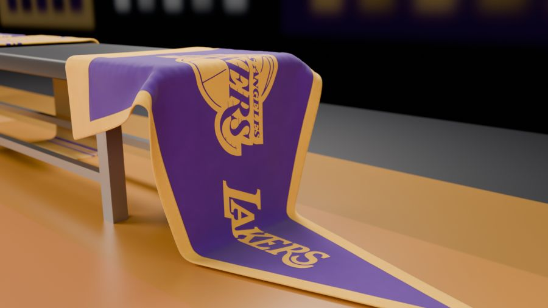
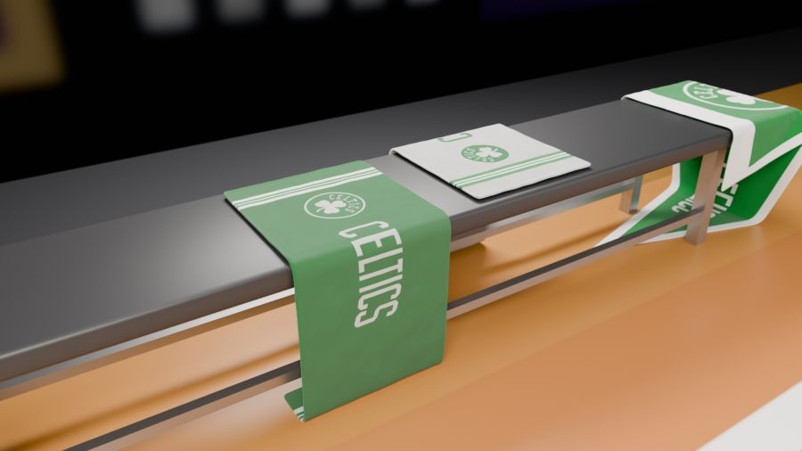
Step 1 · Start from the court
- Open
basketball_court.blendand immediately File › Save As into projects/02-clothes/ asclothes.blend. You keep the floor, ball and hoops. - Copy the court and ball textures into 02-clothes/assets/textures/ (same folder names), plus the new folders: arena-background, pennants, towels and team-logos. Use File › External Data › Find Missing Files if anything turns pink.
- Delete the
Arena Lightscollection (right-click it in the Outliner › Delete Hierarchy). This scene is lit differently. - Select the ball, open the Graph Editor and delete its keyframes (A, X). Set its Location to (0, 6.935, 0.12). This scene is a still.
- World: replace the gradient with a plain Background colour (0.012, 0.013, 0.018), Strength 1, by deleting the gradient nodes in the World node tree.
Step 2 · The arena
- Floor: Add a Plane, Dimensions 90 × 90, apply scale, Location Z −0.005. Name it
Arena_Floor. Material: Base Color (0.018, 0.018, 0.022), Roughness 0.6. - Crowd wall: Add a Cylinder, Vertices 128, Cap Fill Type: Nothing. Set Dimensions 21.2 × 35 × 12, apply scale, Location (0, 0, 6). Name it
Arena_Backdrop. - Crowd material: in the Shader Editor delete the Principled BSDF and add an Emission node. Image Texture arena_crowd_background.jpg → Emission Color, Strength 0.5 → Material Output Surface.
- Overall fill: an Area light named
Arena_Fill, Size 30 × 40, Power 3500 W, Color (1.0, 0.97, 0.92), Location (0, 0, 14), pointing down. - Put the three objects in an
Arenacollection.
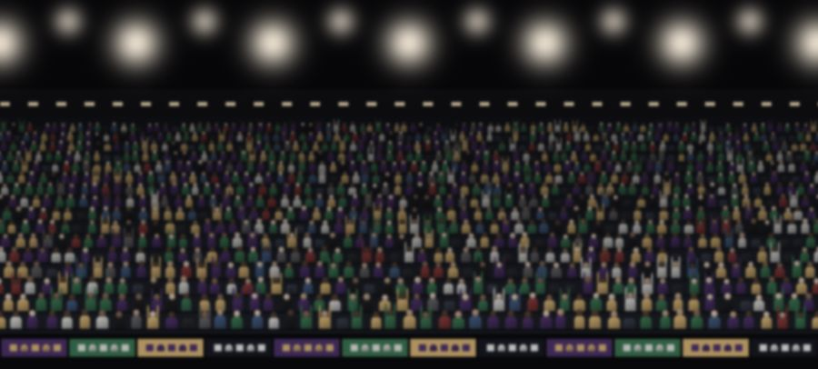
The crowd went through several versions before it became a photo. The first version had 3D crowd stands, and the file was 4.6 MB. Swapping them for one image brought it down to 0.4 MB and made renders much faster:
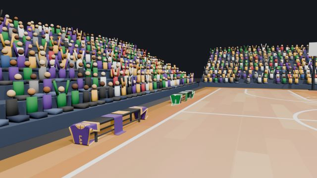
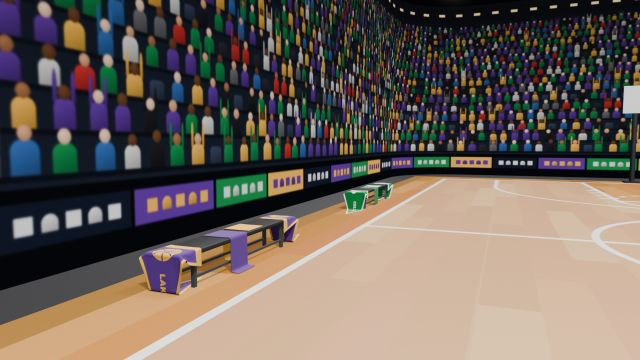
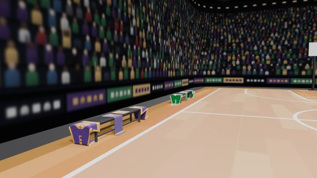
Step 3 · Build the Lakers bench
- Seat: Add a Cube, Dimensions 0.45 × 3.0 × 0.06, apply scale, Location (−8.75, −3.6, 0.43). Name it
Bench_Lakers_Seat. - Modifiers › Bevel: Amount 0.012, Segments 3, Limit Method Angle (30°). Right-click › Shade Smooth. The rounded edges catch a thin highlight, so the seat reads as padded vinyl rather than a sharp block.
- Seat material
Bench_Seat_Vinyl: Base Color (0.025, 0.025, 0.028), Roughness 0.45. - Frame: under the seat, four legs and two long rails, all thin boxes. Legs: Cubes 0.04 × 0.04 × 0.4 standing at the corners of a 0.32 × 2.31 rectangle centred on (−8.75, −3.6). Rails: Cubes 0.04 × 2.35 × 0.04 at X −8.91 and −8.59, Z ≈ 0.12. Apply scale on each.
- Select the six boxes and join them (Ctrl+J). Name the result
Bench_Lakers_Frame. Its overall size should be 0.36 × 2.35 × 0.4. - Frame material
Bench_Frame_Metal: Base Color (0.45, 0.46, 0.48), Metallic 0.9, Roughness 0.35. - Put both in a
Bench_Lakerscollection inside aTeam Benchescollection.
Step 4 · Cloth simulation basics
A cloth simulation treats a mesh like a net of points joined by springs. Blender lets gravity pull the points down frame by frame, and stops them passing through any object marked as a collision object. To fold nicely, cloth needs many points, which is why it starts from a Grid instead of a plain Plane.
The workflow you'll use for every towel and pennant:
The team artwork
The towels and pennants carry the real team logos and wordmarks. These are 2D work, done in an image editor before anything happens in Blender: Blender only sees the finished towel and pennant images. The original logo files and their kit-coloured versions live in their own folder:
| File in 02-clothes/assets/textures/team-logos/ | What it is |
|---|---|
lakers/lakers_logo_source.png · lakers/lakers_wordmark_source.png | The original logo and wordmark, untouched |
lakers/lakers_logo_kit.png | Logo in kit colours: gold ball and outline, purple lettering and seams |
lakers/lakers_wordmark_kit_gold.png · …_kit_purple.png | Wordmark with gold letters (for purple fabric) and purple letters (for gold fabric) |
celtics/celtics_logo_source.png · celtics/celtics_wordmark_source.png | The original logo and wordmark, untouched |
celtics/celtics_logo_kit.png | Badge in kit green and white, with a thin white ring so it stands out on green fabric |
celtics/celtics_wordmark_kit_white.png · …_kit_green.png | Wordmark in white (for green fabric) and green (for white fabric) |
The downloaded logos didn't quite match the kit. The Lakers logo's purple was much darker than the towels', the wordmark's gold was more orange, and the Celtics wordmark was a bluer green. Mixed together they'd look like stickers from different shops. So every logo was recoloured to the exact colours already used on the fabric:
| Kit colour | Hex (for image editors) | Used for |
|---|---|---|
| Lakers purple | #562583 | purple towel, pennant field, logo lettering |
| Lakers gold | #FCB827 | gold towel, stripes, logo ball, wordmark on purple |
| Celtics green | #007932 | green towel, pennant field, badge disc, wordmark on white |
| Celtics white | #F0F0ED (towels) · #FFFFFF (pennant) | white towel, stripes, badge lettering and shamrock, wordmark on green |
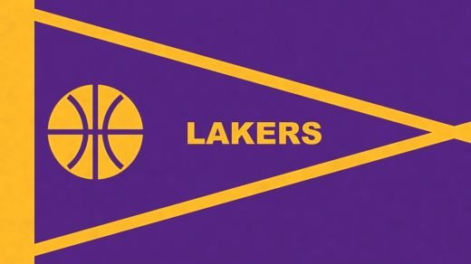
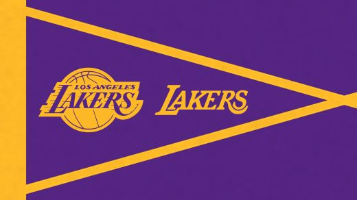
Doing it yourself in an image editor
- Open the towel or pennant image (for example towels/lakers_towel_purple_color.jpg) in GIMP, Krita or Photoshop. Paint over any old artwork with the fabric colour, sampling it with the eyedropper so the shade matches.
- Open a source logo. Recolour it with Select › By Color on one colour region, then fill the selection with the kit hex from the table. Repeat for each colour. On the Lakers logo, the white outline becomes gold and the black seams become purple, so it only uses the two kit colours.
- Paste the recoloured logo as a new layer and place it. Towels (2048 × 860 px): logo centred near (470, 430), about 330–410 px wide; wordmark centred at (1024, 430), about 560–640 px wide. Pennants (3912 × 2200 px): logo starting at x 420, about 1000–1150 px wide; wordmark starting at x 1680, about 900–1050 px wide; both centred vertically at y 1100, inside the triangle.
- Export over the original file name. Blender picks up the change the next time the file is opened, or straight away with Image › Reload in the Image Editor.
- Update the matching data map (towels) or height map (pennants) with the same shapes, so the artwork is raised like real embroidery or appliqué. The values to paint are in the towel and pennant material sections below.
Step 5 · A draped towel
- Collisions first. Select the seat › Physics tab › Collision. Set Softbody & Cloth › Thickness Outer to 0.005. Do the same for the frame and for
Court_Floor. - The towel. Add › Mesh › Grid: X Subdivisions 40, Y Subdivisions 17. Set Dimensions 1.0 × 0.42 and apply scale. Location (−8.66, −3.87, 0.47), 1 cm above the seat top (which is at 0.46). Name it
Bench_Lakers_Towel_Purple. Shade Smooth. - The pin group. Tab, vertex select, and box-select (B) the middle columns of points that lie over the seat. In the Data tab (green triangle) › Vertex Groups press +, double-click to rename it
Pin, and press Assign. Tab back. - Cloth. Physics tab › Cloth. Click the preset icon in the panel header › Cotton. Quality Steps 10. Shape › Pin Group: Pin. Collisions: Object Collisions on, Distance 0.005; Self Collisions on. Cache: End 60.
- Go to frame 1 and press Space. The free ends fall over the long sides of the seat. If it slides off, pin more points; if it passes through the seat, raise Quality Steps.
- Stop at a frame where it has settled (around 40–60). In the Modifiers tab, open the Cloth modifier's dropdown › Apply. Go back to frame 1: the drape stays.
Finishing modifiers, in this exact order
The towel material
Each towel uses two images made for it. The colour image is the design: kit-coloured stripes, the team logo near one end and the wordmark in the middle. The data image stores two grey values in its colour channels. Red is height: 0.50 for the towel field, 0.60 for the embroidered logo and wordmark (a little more for the lettering on top), 0.45 for the flat woven stripes and 0.62 for the hem. Green is how much terry loop shows: 1.0 on the field, 0.56 on the embroidery, almost none on the stripes and hem.
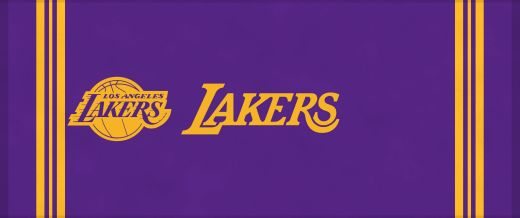
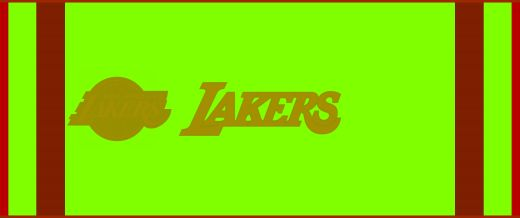
Start with the simple version, check it renders, then add the terry loops.
Simple version: Towel_Lakers_Purple
- Principled: Roughness 0.95, Specular IOR Level 0.15, Sheen Weight 0.3
- Texture Coordinate › UV → Image Texture (colour image, sRGB) → Base Color
- UV → Image Texture (data image, Non-Color) → Separate Color › Red → Bump Height (Strength 1.0, Distance 0.004) → Principled Normal
Add the terry loops
- UV → Mapping (Scale 625, 262.5, 1) → Voronoi Texture (F1, Scale 5, Randomness 0.85) › Distance → Map Range (From 0–0.6, To 1–0). This makes a field of tiny round bumps: the loops.
- Loops × Separate Color Green (Math › Multiply), so loops only appear on the terry area.
- Mapping → Noise Texture (Scale 3, Detail 4); Math › Multiply Add: Noise × 0.25 + loops. Gives the loops gentle unevenness.
- Result → a second Bump (Strength 0.7, Distance 0.0012). Its Normal output goes into the Normal input of the red-channel Bump, so both bumps stack.
- For shading between loops: (loops − 1) × Green + 1 → Mix (Color, Multiply) with the colour image → Base Color. The gaps between loops get slightly darker.
The gold towel
Repeat for Bench_Lakers_Towel_Gold next to it, centred around Y −3.33. Make a fresh grid (or duplicate the purple one before you apply its cloth). Copy the material with the "new material" button beside its name, then swap in the gold colour and data images. Run the simulation with a slightly different pin selection so the two towels don't fold identically.
Step 6 · Felt pennants
- Add a Grid: X Subdivisions 48, Y Subdivisions 24. Dimensions 1.12 × 0.63, the same 16 : 9 shape as the pennant image. Rotate R Z
90so its long side runs along the bench, then apply rotation and scale. - Place it just above the seat at the south end, with about a third hanging past the end of the seat (Y −5.1), at Z 0.47. Name it
Bench_Lakers_Pennant_South. - Pin the points over the seat (vertex group
Pin). Cloth preset Denim, since felt is stiffer than cotton. Same collision settings as the towels. Play, then apply the cloth on a good frame. The free end should fold over the bench end and lie on the floor. - Make the north one the same way at the other end (
Bench_Lakers_Pennant_North, around Y −1.92).
The pennant artwork is felt appliqué: the logo and wordmark are cut-out felt pieces sewn onto the pennant. In the height map the felt field is 0.25, the sleeve, triangle stripes and appliqué pieces are 0.70, the lettering stitched on top of the logo is 0.78, and a dashed white stitch line (0.94) runs just inside every piece's edge.
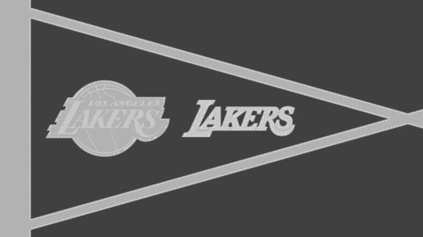
Nodes: Pennant_Lakers
- Principled: Roughness 1.0, Specular IOR Level 0.1, Sheen Weight 0.2
- UV → felt colour image → Mix (Color, Multiply, Factor 1) A
- Texture Coordinate › Object → Noise Texture (Scale 1500, Detail 6, Roughness 0.75) → Map Range (From 0–1, To 0.9–1.06) → Mix B. Mix Result → Base Color. The fibres vary the colour by a few percent.
- Noise → Bump (Strength 0.35, Distance 0.0006) → Normal input of a second Bump whose Height is the height image (Strength 1.0, Distance 0.0015) → Principled Normal
Step 7 · The Celtics bench
- Select the Lakers seat, frame, towels and pennants. Shift+D, Y,
7.2, Enter. The copy sits at Y +3.6. - Rename everything
Bench_Celtics_…and move it into aBench_Celticscollection. - Towels become
Towel_Celtics_GreenandTowel_Celtics_White, pennantsPennant_Celtics. For each, copy the material and swap in the Celtics images. The node setups don't change. - Optional: re-run the cloth on fresh grids so the Celtics folds differ from the Lakers ones.
Step 8 · Light each bench like a product shot
Each bench gets its own four area lights, arranged around it like a photo studio. Here are the Lakers ones from above, at their real positions:
| Light (Lakers) | Shape · size | Power | Color | Location | Rotation (°) |
|---|---|---|---|---|---|
| Lakers_Key_Softbox | Rectangle 1.6 × 1.0 | 330 W | (1.0, 0.93, 0.84) | (−6.5, −5.3, 2.3) | (57.5, 0, 52.9) |
| Lakers_Fill_Panel | Square 2.0 | 80 W | (0.9, 0.95, 1.0) | (−6.3, −1.5, 1.2) | (77.8, 0, 130.6) |
| Lakers_Rim_Strip | Rectangle 1.6 × 0.4 | 260 W | (1.0, 0.97, 0.92) | (−10.1, −3.0, 2.0) | (44.6, 0, −114.0) |
| Lakers_Top_Disk | Disk 1.5 | 110 W | (1.0, 0.98, 0.95) | (−8.6, −3.6, 3.1) | (3.3, 0, 90) |
The Celtics lights are identical, each moved +7.2 in Y: key at (−6.5, 1.9, 2.3), fill at (−6.3, 5.7, 1.2), rim at (−10.1, 4.2, 2.0), top at (−8.6, 3.6, 3.1). Select the four Lakers lights, Shift+D Y 7.2, rename. Put all eight in a Bench Lights collection.
Step 9 · Seven cameras with focus targets
- Add five Empty › Sphere objects as focus targets, in a
Camera Focus Targetscollection: Focus_Lakers_Bench (−8.75, −3.6, 0.45), Focus_Celtics_Bench (−8.75, 3.6, 0.45), Focus_Lakers_Pennant_North (−8.75, −1.9, 0.25), Focus_Celtics_Towels (−8.75, 3.4, 0.46), Focus_Lakers_Pennant_South (−8.75, −4.75, 0.2). - Add the cameras below in a
Render Camerascollection. For each: Data tab › Depth of Field on, Focus on Object = its target, F-Stop as listed, Clip Start 0.05. - The old court Camera can stay (the file keeps it); just make sure one of the new cameras is active before rendering.
| Camera | Location | Rotation (°) | Lens | F-stop | Focus |
|---|---|---|---|---|---|
| Cam_01_Overview | (−5.2, −9.2, 1.7) | (85.5, 0, 21.8) | 26 mm | 5.6 | Lakers_Bench |
| Cam_02_Lakers_Bench | (−6.482, −1.872, 1.206) | (72.3, 0, 118.1) | 28 mm | 4.0 | Lakers_Bench |
| Cam_03_Celtics_Bench | (−6.482, 5.328, 1.206) | (72.3, 0, 118.1) | 28 mm | 4.0 | Celtics_Bench |
| Cam_04_Pennant_Closeup | (−7.812, −1.15, 0.587) | (74.9, 0, 131.3) | 35 mm | 2.8 | Lakers_Pennant_North |
| Cam_05_Towels_Closeup | (−7.363, 2.65, 1.202) | (62.5, 0, 57.0) | 30 mm | 2.8 | Celtics_Towels |
| Cam_06_Behind_Celtics | (−9.6, 1.832, 2.252) | (50.4, 0, −48.7) | 22 mm | 5.6 | Celtics_Bench |
| Cam_07_Under_Bench_Fold | (−7.665, −5.625, 0.305) | (83.0, 0, 50.0) | 28 mm | 2.8 | Lakers_Pennant_South |
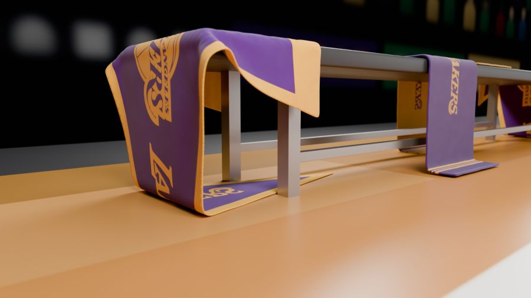
Step 10 · Render all seven
- Render tab: Cycles, GPU. Noise Threshold 0.015, Max Samples 192, Denoise on. Max Bounces Total 12. Motion Blur off.
- Color Management: AgX, Look Punchy, Exposure −0.25. Output: 1920 × 1080, PNG.
- For each camera: select it, Ctrl+Numpad 0, F12, then Image › Save As into 02-clothes/renders/ with the camera's name, e.g.
Cam_01_Overview.png.
Check your result
- Towels hang over both long sides of the seats with natural folds, and none pass through the bench.
- Pennants fold over the bench ends and lie on the floor.
- Close-ups show terry loops on the towels and fuzz on the felt.
- The crowd photo is visible but dim; the benches are the brightest things in frame.
- Each close-up is sharp on its subject with a blurred background.